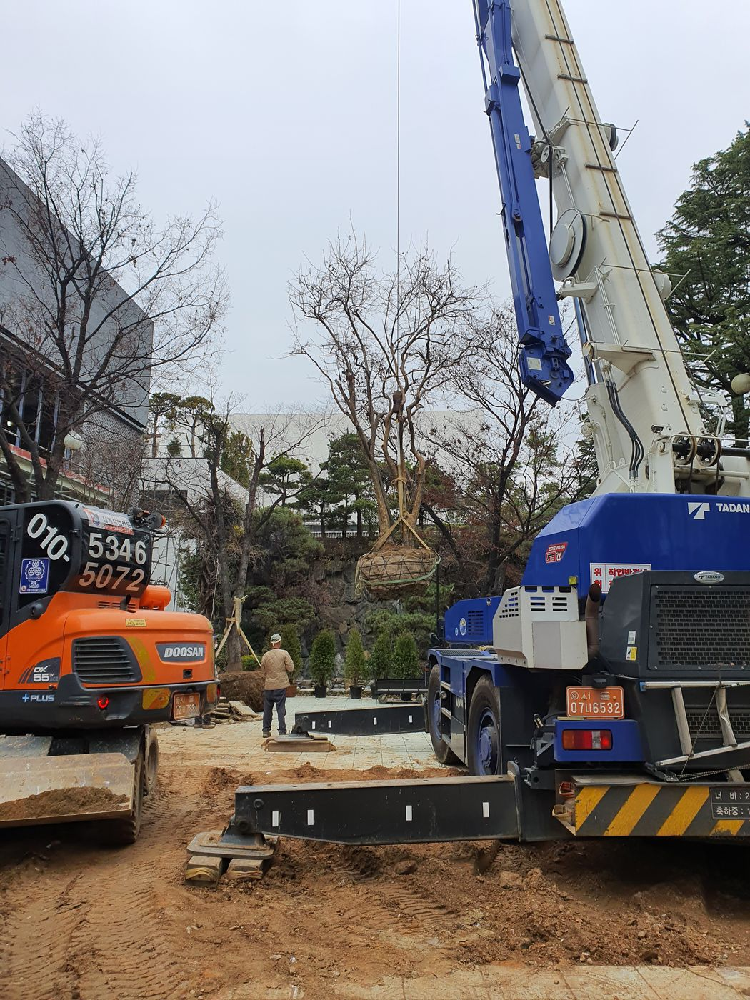
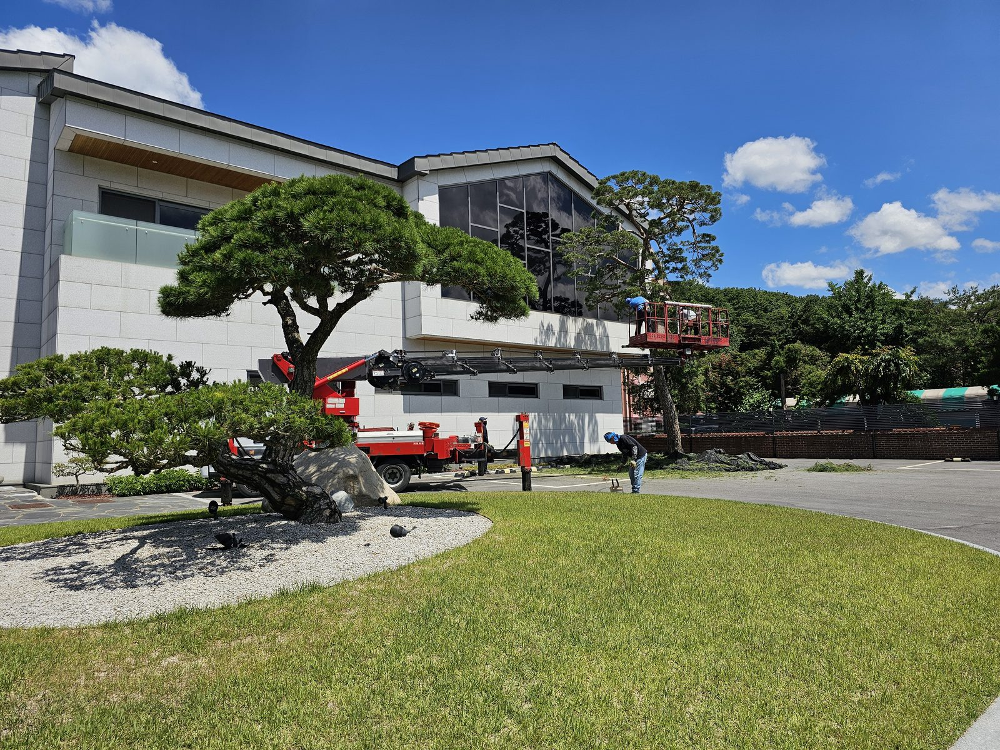

소나무 안내
소나무 옮겨 심기 좋은 시기와 심은 뒤 관리
한 줄 답
소나무는 새순이 움직이기 전인 이른 봄(대략 3~4월)과 더위가 꺾인 가을(대략 9월 말~11월)에 옮겨 심는 것이 좋습니다. 한여름과 땅이 어는 한겨울은 피합니다. 심은 뒤 뿌리가 자리 잡는 활착 기간이 가장 중요하며, 물 관리와 지주 고정, 상태 관찰이 핵심입니다.
고객분들이 전화로 가장 많이 걱정하시는 것이 "심은 나무가 잘 살까"입니다. 소나무는 뿌리가 예민한 나무라서 언제 심고, 심은 뒤 어떻게 돌보느냐가 생육을 크게 좌우합니다. 40년 현장 경험으로 기본을 정리했습니다.
옮겨 심기 좋은 시기
- 이른 봄
- 대략 3~4월, 땅이 녹고 새순이 본격적으로 자라기 전입니다. 뿌리가 자리 잡은 뒤 생장기를 맞을 수 있어 가장 많이 권하는 시기입니다.
- 가을
- 대략 9월 말~11월, 더위가 꺾이고 땅이 얼기 전입니다. 증산이 줄어 나무 부담이 적습니다.
- 피하는 시기
- 한여름은 잎에서 빠져나가는 수분이 많아 부담이 크고, 한겨울은 땅이 얼어 작업과 활착이 어렵습니다.
지역과 그해 날씨에 따라 적기는 조금씩 달라집니다. 일정이 정해져 있다면 미리 상담해 주시면 시기에 맞는 방법을 안내해 드립니다.

심은 뒤 첫 관리: 활착 기간
옮겨 심은 소나무는 뿌리가 새 흙에 자리 잡을 때까지 약해진 상태입니다. 이 기간에는 다음 네 가지를 챙깁니다.
물 주기
심은 직후에는 뿌리분과 흙 사이에 빈틈이 없도록 흠뻑 줍니다. 그 뒤로는 날짜를 정해 주기보다 흙 속이 말랐는지 확인하고 줍니다. 소나무는 물이 고이는 것을 싫어합니다. 겉흙이 젖어 있는데 계속 주면 뿌리가 숨을 쉬지 못해 오히려 해롭습니다.
지주 고정
바람에 나무가 흔들리면 새로 나오는 잔뿌리가 끊어집니다. 지주를 세워 나무를 단단히 고정하고, 묶은 부분이 줄기를 파고들지 않는지 가끔 확인합니다.
비료는 서두르지 않기
뿌리가 자리 잡기 전에 비료를 많이 주면 오히려 뿌리에 부담이 됩니다. 시비는 활착을 확인한 뒤 시기에 맞춰 하는 것이 좋습니다.
상태 관찰
새순이 고르게 나오는지, 잎 색이 변하지 않는지를 지켜봅니다. 안쪽의 오래된 잎이 가을에 누렇게 지는 것은 자연스러운 현상이지만, 새순이나 바깥쪽 잎까지 색이 변한다면 빨리 확인하는 것이 좋습니다.
조형소나무 모양 유지하기
조형소나무는 심은 뒤에도 손이 가야 모양이 유지됩니다. 늦봄에 새로 자란 순을 정리하는 순자르기로 가지가 웃자라지 않게 하고, 가을부터 겨울 사이에 묵은 잎과 엉킨 가지를 정리해 햇빛과 바람이 안쪽까지 들게 합니다. 수형을 잡는 작업은 경험이 필요한 일이라, 큰 나무는 전문 관리를 권합니다.

부림조경의 사후 관리
부림조경은 시공한 현장에 물 주기 요령, 전정과 시비 시기를 함께 안내해 드리고, 정기 관리가 필요한 곳에는 조경 관리 서비스를 제공합니다. 시공 범위에 따라 사후 처리 기준이 달라지므로 계약 전에 범위를 명확히 안내드립니다. 나무만 구매하신 경우에는 식재 후 관리가 고객 몫이라 시공과는 구분됩니다.
심은 나무 상태가 걱정되시면 사진을 찍어 전화 주세요. 경험으로 안내해 드립니다.
자주 묻는 질문
여름에 소나무를 심어도 되나요?
가능은 하지만 권하지 않습니다. 한여름에는 잎에서 빠져나가는 수분이 많아 뿌리가 아직 자리 잡지 못한 나무에 부담이 큽니다. 일정상 꼭 여름에 심어야 한다면 그늘막, 물 관리 등 추가 관리가 필요하니 미리 상담해 주세요.
소나무를 심고 나서 물은 얼마나 줘야 하나요?
심은 직후에는 뿌리분과 흙 사이에 빈틈이 없도록 흠뻑 줍니다. 그 뒤로는 날짜를 정해 주기보다 흙 속이 마르는지를 확인하고 줍니다. 소나무는 물이 고이는 것을 싫어하므로, 겉흙이 젖어 있는데 계속 주는 것은 오히려 해롭습니다.
심은 소나무 잎이 누렇게 변하면 어떻게 하나요?
안쪽의 오래된 잎이 가을에 누렇게 지는 것은 자연스러운 현상입니다. 하지만 새순이나 바깥쪽 잎까지 색이 변하거나 새순이 나오지 않는다면 뿌리 활착 문제일 수 있으니, 사진을 찍어 전화로 문의해 주세요.